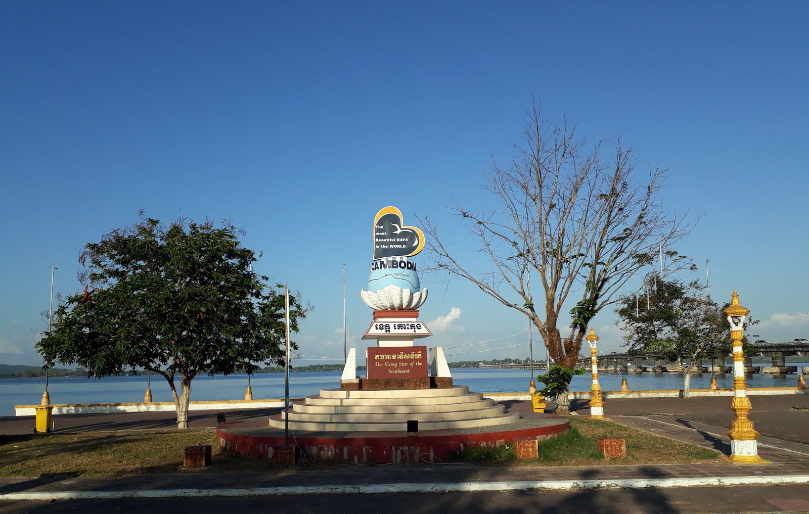

ការពិពណ៏នាអំពី ខេត្តនីមួយៗនៅក្នងប្រទេសកម្ពុជា
ទំព័រដើម
តាកែវ
ភ្នំពេញ
កែប
ព្រះសីហនុ
ស្វាយរៀង
កំពង់ធំ
បាត់ដំបង
ពោធ៏សាត់
សៀមរាប
រតនគីរី
មណ្ឌលគីរី
ក្រចេះ
ត្បូងឃ្មុំ
កំពង់ចាម
ព្រៃវែង
កណ្តាល
ឧត្តរមានជ័យ
កំពង់ឆ្នាំង
កំពង់ស្ពឺ
បន្ទាយមានជ័យ
កោះកុង
ប៉ៃលិន
កំពត
ស្ទឹងត្រែង
ព្រះវិហារ
ទំនាក់ទំនង
ខេត្តកោះកុង

ព័ត៌មានសង្ខេបអំពីខេត្តកោះកុង
> កោះកុង (អ.ស.អ.: [kɑh koŋ]) គឺជាខេត្តមួយស្ថិតនៅភាគនិរតីនៃប្រទេសកម្ពុជា។ ទីរួមខេត្តគឺក្រុងខេមរភូមិន្ទ។ខេត្តនេះដែលមានក្រុងខេមរភូមិន្ទជាទីរួមខេត្តស្ថិតនៅភាគនិរតីនៃប្រទេសកម្ពុជា។ ខេត្តកោះកុងមានព្រំប្រទល់ ខាងជើងជាប់នឹងខេត្តពោធិ៍សាត់ ខាងកើតជាប់នឹងខេត្តកំពង់ស្ពឺ កំពត និង ព្រះសីហនុ ខាងត្បូងនិងខាងលិចជាប់នឹងឈូងសមុទ្រថៃ និងមួយផែ្នកនៃចង្វាតត្រាច(ខេត្តត្រាច)ប្រទេសថៃ។
> ខេត្តនៅចុងនិរតីបំផុតនៃប្រទេសកម្ពុជា គឺកោះកុងមានខ្សែឆ្នេរសមុទ្រដ៏វែងដែលមិនទាន់បានអភិវឌ្ឍ និង ទីខាងក្នុងព្រៃ ភ្នំ ដែលមិនអាចចូលទៅដល់ដ៏ធំល្វឹងល្វើយហ៊ុំព័ទ្ធដោយផ្នែកនៃជួរភ្នំក្រវាញ ឧទ្យានជាតិដ៏ធំបំផុតរបស់កម្ពុជា គឺឧទ្យានជាតិបទុមសាគរ និងក៏ជាផ្នែកមួយនៃឧទ្យានជាតិគីរីរម្យ។ អ្វីដែលជាភាពទាក់ទាញទេសចរណ៍របស់ខេត្តនេះរួមមានបនល្បែង និង ទឹកធ្លាក់ ខណៈនោះដែរតំបន់នេះក៏ជាតំបន់នាំចេញ ហើយសុខូបត្ថម្ភវត្ថុកំពង់ផែថ្មីៗត្រូវបានគេអភិវឌ្ឍឡើងដើម្បីធ្វើពាណិជ្ជកម្ម។
> ខេត្ត កោះកុង មានចំនួន ៦ ស្រុក និង ១ ក្រុង :
- ស្រុកបុទុមសាគរ
- ស្រុកគិរីសាគរ
- ស្រុកកោះកុង
- ស្រុកមណ្ឌលសីមា
- ស្រុកស្រែអំបិល
- ស្រុកថ្មបាំង
- ក្រុងខេមរៈភូមិន្ទ